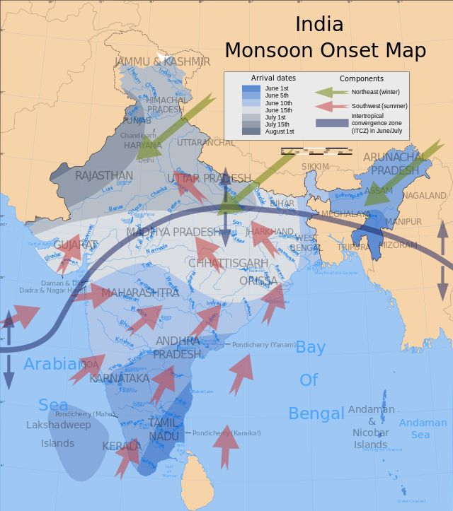

During summer, the Indian landmass heats up faster than the surrounding Indian Ocean, creating low pressure over the continent.The relatively cooler air over the ocean moves toward the low-pressure area on land, bringing moisture-laden winds.These southwest winds blow from the Arabian Sea and Bay of Bengal toward India, carrying abundant moisture. Wind hitting the Western Ghats and Himalayas rises, causing condensation and heavy rainfall, especially on the windward side. The ITCZ shifts northward in summer, enhancing convection and rain over India.The heated Tibetan Platea strengthens the monsoon by inducing upper-air circulation patterns.
The monsoon occurs due to the temperature contrast between the Indian landmass and the ocean. Summer heat warms the land rapidly, causing hot air to rise and form a deep low-pressure area. The cooler Indian Ocean maintains higher pressure, creating a natural atmospheric imbalance. To balance this, massive columns of moisture-heavy air blow from the ocean toward the land. Earth’s rotation deflects these incoming currents, turning them into the Southwest Monsoon winds. When these winds hit mountains like the Western Ghats and Himalayas, they are forced upward. This upward cooling causes the moisture to condense, triggering widespread summer rainfall. By winter, the process reverses into a cooler, dry Northeast Monsoon as the land cools down.

The primary rainy season, known as the Southwest Monsoon, occurs from June to September. It typically hits the southern coast of Kerala in early June and moves northward. By mid-July, these moisture-laden winds cover the entire Indian subcontinent. This four-month period accounts for over 75% of India's annual rainfall. A transition period called the Retreating Monsoon occurs between October and November. During this time, the weather patterns reverse as the land begins to cool down. This phase triggers the Northeast Monsoon, bringing winter rain from October to December. This winter phase primarily benefits southeastern coastal states like Tamil Nadu.
El Niño brings warmer ocean temperatures and weakened trade winds to the Pacific, causing below-average, erratic rainfall and droughts in India. Conversely, La Niña strengthens these winds, leading to cooler ocean waters, enhanced Southwest Monsoons, above-average rainfall, and sometimes flooding, as well as significantly colder winters.
East African Rainfall: Variability in the Indian monsoon can lead to droughts or floods in East Africa due to shifts in the Indian Ocean Dipole (IOD).
East Asian Climate: Weak or delayed monsoons sometimes correspond with increased typhoon activity in the Western Pacific.
Polar and Mid-Latitude Feedbacks: Melting in the Arctic or Himalayas alters pressure patterns that feed back into monsoon strength, illustrating a bidirectional influence between distant regions.